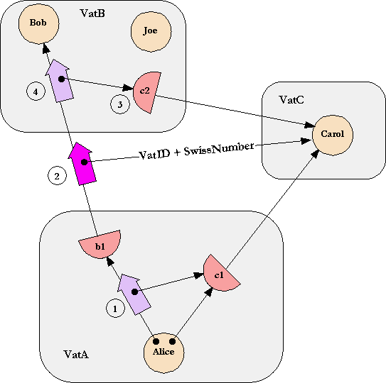

Mark S. Miller, ERights.org
Bill Frantz, Communities.com
Chip Morningstar, Communities.com
From simple abstractions, great power may bloom. Sometimes, this power comes not so much from generating new intuitions, as from showing the synergy possible between intuitions developed separately by disjoint communities. For example, Shannon's formalization of the notion of information built a bridge between the electrical engineer's intuitions about signals, encodings, and noise, and the mechanical engineer's intuitions about temperature and thermodynamic efficiency.
This paper takes a first step in unifying the work of the object programming community, the capability-based secure operating systems community, and the financial cryptography community. Historically:
Unfortunately, each has been weak in the areas where the other two are strong. By bridging the intuitions of these communities, we can engineer systems synergistically strong in all three ways. The developing bridge reported by this paper is based on a joint appreciation of a common abstraction, illustrated by the Granovetter Diagram shown on the right. The sociologist Mark Granovetter originally developed diagrams of this type to illustrate how the topology of interpersonal relationships changes over time, as people introduce people they know to each other [Granovetter77]. Though Granovetter devised this diagram in the context of human relations, we have found it to be a powerful notation for understanding the relations between computational objects in a network.
We present this abstraction from six perspectives:
Since we can only touch upon each perspective briefly within the space allowed for this paper, we have chosen breadth over depth, so that even a brief treatment can unify the perspectives. Hopefully our references and future writings will provide the needed depth as well.
Objects. Most importantly, the Granovetter Diagram shows the computation step fundamental to all object computation: the "message send" (in Smalltalk terminology) or the "virtual member function call" (in C++ terminology). Alice, Bob, and Carol are three objects. In the initial conditions, Alice holds a reference to (points at, has access to) Bob and Carol. Dynamically, we see that Alice is sending a foo message to (calling the foo member function of) Bob, in which a parameter of the message (call) is a copy of Alice's reference (pointer, access) to Carol. For conciseness, we will refer to this computation step as the Granovetter Operator. For concreteness, we will briefly explain E, one of many pure object languages in which these principles are clear.
Object-oriented message passing, along with encapsulation and polymorphism, enables modular programming. By designing the interfaces between modules on a need-to-know basis, we satisfy the principle of information hiding [Parnas72] that is the basis of much important software engineering theory and practice.
Capability Security. The Granovetter Operator becomes a security primitive given the following constraint: If Bob does not already have a reference to Carol, Bob can only come to have a reference to Carol if a third party, such as Alice,
voluntarily decides to share with Bob her reference to Carol.
A system with this property is a capability system. In a capability system, only connectivity begets connectivity. In a capability system, an object's authority to affect the world outside itself is determined solely by what references it holds, since the only way the object can cause an external effect is to send a message via one of these references. Consequently, the mechanics of reference-passing determine how authority can change over time.
The capability model prohibits certain possibilities, such as forgeable references or mutable global variables, that the object computation model does not prohibit, though it does not demand them either. Although, in principle, the object computation model is perfectly compatible with these prohibitions, most embodiments of object computation (typically in the form of programming languages) do not attempt to stay within the boundaries that the capability model requires [Kahn88]. We explain why E does stay within these boundaries, and so is capability-secure [Hewitt73, Tribble95, Rees96]. We will present an implementation of capability-based money as an example.
The main capability-system design rule, the principle of least authority (sometimes called the "principle of least privilege") requires one to design interfaces such that authority is handed out only on a need-to-do basis [Crockford97].
Cryptographic Protocol. Imagine now that Alice, Bob, and Carol are objects residing on three separate machines on a computer network. Distributed object systems, such as CORBA [CORBA] and RMI [Wollrath99], provide for the diagrammed message send to proceed over the network, while preserving the core semantics of the object computation model. However, these are cooperative protocols, in that they rely on the assumption that the machines involved are correctly cooperating. By contrast, a cryptographic protocol implementing the Granovetter Operator must also preserve the semantics of the capability model, including the prohibitions, in the presence of mutually suspicious objects residing on mutually suspicious machines.
We briefly explain Pluribus, E's cryptographic capability protocol, turning E into a securely distributed language. We examine how the money example (from the previous section) transparently distributes by showing how Pluribus automatically maps the pieces of the example to stock cryptographic-protocol elements.
Public Key Infrastructure. Some PKIs, like SPKI (the Simple Public Key Infrastructure [Ellison99]), interpret digital certificates primarily as statements authorizing the players to perform various actions on various resources. In the Granovetter Diagram, the message arrow foo can be seen as such a certificate, signed by Alice, stating that Bob has the authority to perform the action represented by Carol. This certificate is meaningful if and only if there is a similar certificate granting Alice this right, and so on, back to the creator/owner of Carol. Should Bob choose to exercise this authority, he would present the certificate-chain (or its logical equivalent) as proof that he has received this authorization.
The enforceable subset of SPKI can be seen as an off-line, auditable, heavyweight, non-confinable, semi-capability system, as opposed to E's on-line, repudiatable-by-default, lightweight, confinable, full-capability system. Perhaps, by comparing these, we may figure out how to build systems with some of the best of both.
Game Rules. During a player's turn in a board game, the state of the board constrains what moves that player may make. From these possible moves, the player chooses a particular move, which changes the board and thereby alters the moves then available to the other players. Recall the three conditions needed for Bob to receive a reference to Carol from Alice. The first two conditions are constraints on the possible moves available to Alice (and so correspond to mandatory security). The third condition is that Alice must choose to make this move (and so corresponds to discretionary security). If Alice actually does choose to make this move, she thereby changes the moves available to Bob -- afterwards Bob may both send messages to Carol and send messages to yet other parties introducing Carol to them, whereas previously he could not.
Attempts to formalize the semantics of computation, including secure computation, have failed to capture the core intuitions of computer security practitioners. Fundamental to these intuitions is the notion of mutually suspicious, separately interested agents, interacting within a framework of rules, under constraints of partial knowledge, each in order to pursue their own interests. The formal tools for capturing such intuitions are to be found in non-zero-sum, partial-information game theory. The Granovetter Diagram expresses the core game-rule governing secure capability-based distributed multi-agent computation, viewed as a vast multi-player game.
We have yet to exploit this perspective in order to apply game theory to computation in this manner, but we hope this explanation may point the way. We do not explore the game perspective further in this paper.
Financial Bearer Instruments. If Carol provides a useful service, then the ability to send messages to Carol may be a useful right. Perhaps Carol answers questions from a store of knowledge that she alone is privy to. Perhaps she can affect some aspect of the external world, such as pixels on a display or the cash dispenser of an automated teller machine. Any secure system of electronic rights must solve at least three problems:
How to enable rights holders to securely transfer these rights.
The static reference relationships among objects exactly represent who currently has what rights. Since a right is exercised by sending a message to an object that embodies the right, such as Carol, the rule that you can send a message to any object you have a reference to, but no others, provides for the exercise of those rights you have, and no others. Finally, the transition shown on the Granovetter Diagram is both the secure transfer to Bob of the right to pass messages to Carol, as well as the exercise, by Alice, of whatever right Bob may represent.
In the face of widespread misuse of the term "electronic commerce", we should remember that "commerce" entails more than just the ability of a merchant to accept monetary payment. Commerce is a rich set of market interactions that emerge when territory and abilities are abstracted into "rights", and a rich set of arrangements that emerge for the mutually acceptable transfer of these rights. For large scale electronic commerce, we should concern ourselves with those rights which are both representable electronically and enforceable electronically, and with mutually-enforceable arrangements for their transfer.
The Granovetter Diagram by itself shows the simplest -- in the electronic world -- interesting such electronic right: a non-exclusive, specific, exercisable, non-assayable bearer instrument. By contrast, the money example from sections 2 and 3 shows an exclusive, fungible, non-exercisable, assayable bearer instrument. We sketch a taxonomy of other enforceable electronic rights, and show how most of these can be built by simple compositions of the Granovetter Operator. Derivative rights, including derivative financial instruments, are composed from underlying rights via familiar object abstraction. We show a covered call option as an example.
We are building the E system to unify these perspectives. E is a simple, secure, semi-transparently distributed, pure-object, persistent programming language, founded in the lambda calculus, capability security, and modern cryptography. In E, these are not separate elements, but realize together the various virtues of the Granovetter Operator. Throughout the paper we present our examples in E, explaining the language briefly as needed.
Object computation can be understood as the sum of three elements [Hewitt73]:
Objects == Lambda Abstraction + Message Dispatch + Local Side Effects
(footnote: The remaining feature often thought to be defining of object-oriented programming is inheritance. Though we do not view inheritance as as a fundamental ingredient of object computation, its widespread use in object-oriented programming practice motivates its inclusion in E. However, E's reconciliation of inheritance with capability security principles [Miller99] is beyond the scope of this paper.)
Lambda abstraction [Church32] is a pure theory of nested function definition and application. In E notation, conventional function definition and application should look familiar:
define factorial(n) {
if (n <= 0) {
1
} else {
n * factorial(n-1)
}
}
? factorial(3)
# value: 6
The only unfamiliar element may be the lack of an explicit return statement. Like
Lisp and Smalltalk, E is an expression language -- the value of a block of expressions
is the value of the last expression in that block. (footnote: by the time you
read this, E's syntax will likely have changed to make the returning of values
more explicit.)
Nested function definition, familiar from all lexical lambda languages including ALGOL60, Scheme, and ML, should also look familiar:
define adderCreator(x) {
define adder(y) {
x + y
}
}
? define addThree := adderCreator(3)
# value: <adder>
? addThree(5)
# value: 8
The call to adderCreator returns a version of the adder function that adds 3 to its argument. Church originally thought about this as substitution -- return an adder function in which x has been replaced by 3. Unfortunately, this simple perspective generalizes poorly. An alternative perspective is to consider a function, such as that held in the addThree variable, to be a combination of a behavior -- the static code for adder, and state -- the runtime bindings for its free variables. x in adder is a free variable in that adder uses x, but the corresponding definition of x is inherited from adder's creating context. In the remainder of this paper, we will refer to such free state variables as instance variables.
Such functions already have the most often cited attribute of objects: they are a combination of encapsulated state together with behavior that has exclusive access to that state. Ignoring for a moment the message-name foo, the Granovetter Diagram describes an important aspect of the lambda calculus. Imagine that Alice, Bob, and Carol are three functions. If, in the initial conditions, Alice contains a binding for Bob and Carol, then Alice's behavior can give Bob access to Carol.
define ... { # enclosing context
define bob := ... # instance variable bob somehow bound to Bob
define carol := ... # instance variable carol somehow bound to Carol
define alice(...) { # defines Alice
bob(..., carol, ...) # Alice sends Bob a reference to Carol
}
...
}
The most visible difference between a function and an object is that a function's behavior is written to satisfy just one kind of request, and all calls on that function are forms of that one request. By contrast, an object's behavior enables it to satisfy a variety of different requests (each with a separate method). A request to an object (a message) identifies which of these requests is being made. There is nothing fundamental here; objects have been trivially built from functions, and vice-versa, many times in the history of computer science. In E, behaviors-as-bundles-of-methods and requests-as-messages are the more primitive notions, of which functions are a degenerate case.
define PointMaker(x,y) {
define Point {
to printOn(out) { out print(`<$x,$y>`) }
to getX { x }
to getY { y }
to add(other) {
PointMaker(x + other getX, y + other getY)
}
}
}
? define p := PointMaker(3,5)
# value: <3,5>
? p getX
# value: 3
? p + PointMaker(4,8)
# value: <7,13>
From a lambda-calculus perspective, PointMaker is like adderCreator -- it is a lexically enclosing function that defines the variable bindings used by the object it both defines and returns. From an object perspective, PointMaker is simultaneously like a class and constructor -- both defining the instance variables for Points, and creating, initializing, and returning individual Points. We have found such lambda-based object definition to be simpler, more expressive, and more intuitive, than either of the common choices -- class-based and prototype-based object definition. The lambda-based technique for defining objects dates back at least to 1973 [Hewitt73], so we find it distressing that the other two are often assumed to be the only available choices.
The returned Points are clearly object-like rather than function-like. Each Point's behavior contains four methods -- printOn, getX, getY, and add -- and every request to a Point starts by naming which of these services is being requested. Now we see that the foo in the Granovetter Diagram is simply a message-name. Extending our earlier example, Alice's behavior would be:
bob foo(..., carol, ...)
Some shortcuts above need a brief explanation.
define adderCreator {
to run(x) {
define adder {
to run(y) {
x add(y)
}
}
}
}
Two features of object programming implied by the Granovetter Diagram have been left out of computation as so far described.
First, the diagram implies that Bob is obtaining access to Carol, but computation as so far described gives Bob no means for holding on to this access.
Second, we understand the diagram to say that Alice is giving Bob access to Carol herself, not a copy of Carol [Deutsch99]. However, in computation as has been described so far, Carol is indistinguishable from a copy of Carol. We cannot distinguish between pass-by-reference-sharing and pass-by-copy, but the Granovetter Diagram clearly intends to show specifically pass-by-reference-sharing. Were computation adequately described purely in terms of pass-by-copy, the Granovetter Diagram would be unnecessary.
The introduction of side effects solves both of these problems.
Starting with lambda calculus (or with lambda plus message dispatch), there are many ways to add side effects. The approach used by E, Scheme, ML and many other lambda languages is to introduce assignment.
How does assignment make Carol potentially distinct from a duplicate of Carol? Consider:
define CounterMaker() {
define count := 0
define Counter {
to getCount { count }
to incr { count += 1 }
}
}
? define carol := CounterMaker()
# value: <counter>
? carol getCount
# value: 0
? carol incr
? carol getCount
# value: 1
Two otherwise identical Counters are distinct because they have distinct count variables that increment separately. All those who have access to the same Counter are able to see the side effects of incr messages sent by others who have access to this same Counter.
How does assignment enable Bob to retain access he has been given to Carol? By assigning an incoming message-argument to the carol instance variable:
define BobMaker() {
define carol := null
define Bob {
to foo(..., newCarol, ...) {
carol := newCarol
}
...
}
}
Technically, by introducing assignment, we have made each variable into a distinct primitive variable-object. A user-defined object then contains bindings from the names of these variables to these variable-objects. The variable-objects in turn contain the bindings to the current values of the variables. When the programmer writes a use-occurrence of the variable in an expression, this causes the containing object to send a getValue message to the variable-object to get its current value. When the programmer writes an assignment, this causes the containing object to send a setValue message to the variable-object.
When a variable is only in the scope of one object, as in all the above examples, we usually ignore this distinction, and speak as if the containing object has bindings directly from the variable names to the current values of these variables. But this shortcut does not work for code such as:
define getterSetterPair(value) {
define getter() { value }
define setter(newValue) { value := newValue }
[getter, setter]
}
Each time getterSetterPair is called, it defines a new value variable and returns a list of two functions, one that will get the value of this variable and one that will set it. This is a trivial example of a useful technique -- defining several objects in the same scope, each providing different operations for manipulating a common state held in that scope.
On the left we see, diagrammed in explicit detail, the objects and relationships resulting from a call to getterSetterPair. On the right, the triple is visualized as a single composite. Like an individual object, a composite is a combination of state and behavior. Like an individual object, the state consists of all of the variables within the composite. The behavior consists of all of the code within the composite, but here we have an important difference.
The behavior elicited by a message to the composite depends not just on the message, but, obviously, on which object of the composite receives the message. Objects on the surface of the composite -- objects which may be referred to from outside the composite, like getter and setter -- are facets of the composite.
The aggregation of a network of objects into a composite is purely subjective -- it allows us to hide detail when we wish. The technique works because the possible interactions among composites obey the same rules as the possible interactions among individual objects -- these rules are therefor compositional.
When speaking of object computation, all too much emphasis is often placed on the objects themselves. The fabric of an object system is the dynamic reference graph. As suggested by the Granovetter Diagram, objects (or composites) are the nodes of this graph and references are the arcs. Only computation within the graph brings about changes to the topology of the graph (the who refers to whom relationships), and it only brings about those changes that are enabled by the graph's current topology. To learn the perspective of the Granovetter Diagram is to see the dynamic reference graph as primary, and objects themselves as secondary [Kay99].
The capability was first invented by secure operating system designers. It started as a way to protect "primitive" resources such as memory segments [Dennis66], but was soon generalized [Wulf74] into a protected ability to invoke arbitrary services provided by other processes. For each process, there is a table associating small numbers (similar in spirit to Unix file descriptors) with the capabilities held by that process. These small numbers serve the same function as variable names do in the lambda calculus [Rees96]. In a pure capability operating system [Hardy85, Shapiro99], a process's only source of authority is the capabilities that it holds.
A capability is normally thought of as a pairing of a designated process with a set of services that the process provides. For example, in KeyKOS a capability carries a numeric tag which an invoked process receives along with an incoming message. The process then typically dispatches to a specific method based on both the numeric tag and the KeyKOS equivalent of a message name. The equivalence with objects is clear: the behavior looked up in this way, paired with the process-state, is the same sort of state-and-behavior that defines an object. When different capabilities make different behaviors from the same process available via different numeric tags, we can view the process as a composite and each of its capabilities as a facet.
The capability model is, in a sense, the object model taken to its logical extreme. Where object programmers seek modularity -- a decrease in the dependencies between separately thought-out units -- capability programmers seek security, recognizing that required trust is a form of dependency. Object programmers wish to guard against bugs: a bug in module A should not propagate to module B. Capability programmers wish to guard against malice. However, if B is designed to be invulnerable to A's malice, it is likely also invulnerable to A's bugs.
Historically, although capability programmers have created stronger modularity in this sense, they have harvested fewer of modularity's benefits. Object programmers have explored patterns [Gamma95] -- a taxonomy of stereotyped arrangements of abstractions that successfully work together. These abstractions work well together because the modularity boundaries between them aid their combination rather than obstructing it. In unifying the object paradigm with the capability paradigm, we hope to see a growing taxonomy of patterns of cooperation without vulnerability -- stereotyped arrangements in which mutually suspicious, separately interested agents may work together safely to achieve diverse goals. This paper explains a few such patterns.
So how do we get from objects to capabilities? It suffices to prohibit certain deviations from pure object computation. (It is also convenient, though not essential, to add a rights amplification primitive as explained below.) What are these new prohibitions?
Only Connectivity Begets Connectivity. Consider all the ways Bob can obtain access to Carol. Only three possibilities are allowed:
If Bob's creator has access to Carol at the time of Bob's creation, Bob may be created sharing this access -- In essence, Bob is born holding a reference to Carol. Referring again to the PointMaker example, the PointMaker, with access to x as a parameter, creates a new Point that has access to x as part of its initial endowment.
Languages that satisfy this constraint are sometimes called memory-safe languages. Object systems with garbage collection depend on this property to enable garbage collection to be semantically transparent. Since a disjoint subgraph cannot become reconnected, its storage may be silently recycled.
Absolute Encapsulation. From outside an object, one must not be able to gain access to the object's internals without the object's consent, even if one has a reference to the object. For operating systems, this corresponds to the separation of processes, and is quite common (even if imperfect) outside of capability operating systems. For example, operating systems often control a computer's memory management hardware so that one process cannot read or write another's address space or access its (for example) file descriptors, even if the two processes are communicating.
All Authority Is Accessed Only by References. The authority an object has to affect the world outside of itself should be exactly represented by the references it holds. All primitives for interacting with the external world must be embodied by primitive objects, and one must obtain references to these primitive objects in order to exercise the associated primitive functions. Anything globally accessible must therefor be transitively immutable, otherwise it would constitute an unconditional source of authority not controlled by the reference-passing rules [Kahn99, Rees96].
There is one feature that most capability systems provide as a primitive but which is not derivable from pure object programming -- rights amplification. With rights amplification, the authority accessible from bringing two references together can exceed the sum of authorities provided by each individually. The classic example is the can and the can-opener -- only by bringing the two together do we obtain the food in the can.
Two common forms of rights amplification are sibling communication [Hardy, Gosling96, Morris73] and sealer/unsealer pairs [Miller87, Tribble95 Appendix D, Rees96]. E primitively provides sealer/unsealer pairs. The money example below builds sibling communication from sealer/unsealer pairs.
Sealer/unsealer pairs are similar in concept to public/private key pairs. The sealer is like an encryption key, and the unsealer like a decryption key. The provided primitive, BrandMaker, makes and returns such a pair. When the sealer is asked to seal an object it returns an envelope which can only be unsealed by the corresponding unsealer.
? define [sealer, unsealer] := BrandMaker pair("MarkM")
# value: [<MarkM sealer>, <MarkM unsealer>]
? define envelope := sealer seal("X")
# value: <sealed by MarkM>
? unsealer unseal(envelope)
# value: X
If the envelope is the can and the unsealer is the can-opener (specific to this brand of cans), then X is the food. (The name-string "MarkM" provided as an argument to the pair message is purely for documentation and debugging purposes.)
Before presenting the following simple example of capability-based money, we must attempt to head off a confusion this example repeatedly causes. We are not proposing to actually do money this way! A desirable money system must also provide for:
The following money provides none of these. Nevertheless, this simple money is a wonderful small example of the directness and simplicity with which capabilities allow the expression of arrangements in which mutually suspicious parties can cooperate safely.
The following code is somewhat more nested than you may be used to. The outer function, MintMaker, makes mints. Each mint defines a separate currency that isn't directly convertible with other currencies -- although, of course, money changers could trade one for the other, providing indirect convertibility. A mint can make purses that hold new units of its currency, thereby inflating that currency. A purse can report its balance and make a new empty purse of the same currency. Given two purses of the same currency, you can deposit money into one from the other.
Define MintMaker(name) {
define [sealer, unsealer] := BrandMaker pair(name)
define mint {
to printOn(out) { out print(`<$name's mint>`) }
to makePurse(balance : (any >= 0)) {
define decr(amount : (0..balance)) {
balance -= amount
}
define purse {
to printOn(out) { out print(`<has $balance $name bucks>`) }
to getBalance { balance }
to sprout { mint makePurse(0) }
to getDecr { sealer seal(decr) }
to deposit(amount : integer, src) {
unsealer unseal(src getDecr)(amount)
balance += amount
}
}
}
}
}
(The "name" variable and the "printOn" methods have no security properties. They exist purely for debugging purposes.)
This simple piece of code demonstrably has the following security properties
To understand this, let's walk through how Alice pays Bob $10. We skip how we arrive at our initial conditions, where Alice and Bob each have a main purse of the same currency, and Alice already has at least $10.
First, playing Alice, we would sprout a new purse from our main purse, and then transfer $10 into it:
? define paymentForBob := AliceMainPurse sprout # value: <has 0 MarkM bucks> ? paymentForBob deposit(10, AliceMainPurse) # value: 10
Then, we send a foo request to Bob, providing the purse containing $10 as payment:
? bob foo(..., paymentForBob, ...)
(Although it may not be obvious, in the above figure the three rightward arrows refer to three different purses.)
What might Bob's foo method look like?
define Bob {
...
to foo(..., payment, ...) {
BobMainPurse deposit(10, payment)
# proceed only if we got $10
...
}
}
This last deposit operation is key. Its success assures Bob that his main purse has been credited with $10. Under all other conditions it must fail. Under all conditions, the integrity of the money system must be conserved. All this despite the use of the payment parameter which, since it was received from an untrusted source, may be any arbitrary object. The deposit method must verify that the src purse is a purse of the same currency, and if so, that it has adequate funds to cover the transfer. If so it must decrement the src purse's balance by this amount and increment its own balance by that same amount. The problem? How can we allow the src purse be told to decrement its balance by a sibling purse (one of the same currency), but not allow a client of the purse, such as Alice, to violate conservation of currency by making the same request? Conversely, how can we prevent Alice from providing a bogus purse that claims it has decremented itself, only to fool Bob's purse into incrementing itself at no cost to Alice?
In the deposit method, the payment is bound to the src parameter and the following body is executed:
unsealer unseal(src getDecr)(amount)
This asks the src purse for its decr function. A purse implemented by the above code will return an envelope containing the decr function and sealed with the sealer of its creating mint. Other objects might return anything. Whatever we get back from getDecr we then unseal with the unsealer of our creating mint. This will succeed only if the argument is an envelope sealed with the corresponding sealer. One can only get such an envelope from a purse created by the same mint, and therefor of the same currency. Otherwise it will throw an exception, preventing further action.
If we succeed at unsealing, we know we have a decr-function facet of some purse of the same currency. We call it with the amount to transfer. Its amount parameter is declared:
amount : (0..balance)
which only binds to the argument if the argument is between 0 and balance. Otherwise, the attempted parameter binding throws an exception. Finally, only if the call to the hidden decr function succeeds do we increment our own balance.
Notice how the scoping rules together with the capability rules allow us to "prove" many security properties through a simple visual inspection:
First we explain a simplified version of the E's communications protocol, Pluribus, identical from a security point of view, but less efficient. The purpose of Pluribus is to provide the Granovetter Operator, with all its implied security properties, even when Alice, Bob, and Carol are on separate machines.
Objects are aggregated into units called vats. Each E object exists in exactly one vat -- we speak of an object being hosted by its vat. A vat typically hosts many objects. Similarly, each vat exists on one machine at a time, but a machine may host many vats. A good first approximation is to think of a vat as a process full of objects -- an address space full of objects plus a thread of control. Unlike a typical OS process, a vat persists (that is, its state is saved to persistent storage when its hosting process is terminated or interrupted), so think of a vat-hosting OS process as an incarnation of a vat. The vat maintains its identity and state as it passes serially through a sequence of incarnations.

To enable objects in separate vats to send messages to each other, we must bridge from the world of local, intra-address-space language-implementation technology to the world of network communications protocols. Our first step is conventional: each vat contains a communications system allowing it to make connections to, and accept connections from, other vats. Each vat's communications system contains objects called proxies (shown by half circles in the figure above). When an object in a vat refers to an object in a different vat, it actually refers to a proxy object, which is the local representative of the remote object. In the illustration, when a proxy (b1) is sent a local message (step 1), it encodes the message arguments (c1) into a packet which it sends out as a network message (step 2). When VatB receives the network message, it decodes it into a message local to VatB, handshaking with remote vats (VatC) as necessary to create the needed proxies (c2, step 3). The decoded message is finally delivered to Bob (step 4).
The description so far applies equally well to many distributed object systems, such as CORBA and RMI, that have no ambitions to capability security. What more do we need to make this into a secure protocol?
On creation, each vat generates a public/private key pair. The fingerprint of the vat's public key is its vat Identity, or VatID. What does the VatID identify? The VatID can only be said to designate any vat which knows and uses the corresponding private key apparently according to the protocol.
Within a single vat, a capability-arrow is implemented as a traditional memory address pointer. Capability security within an address space is built out of safe language techniques (made popular by Java, but going back to LISP 1.5 and ALGOL 60). A capability-arrow can also go between vats. If Alice, Bob, and Carol are in three separate vats, then Alice can talk to Carol only because VatA can talk to VatC. An inter-vat data connection is secure and authenticated. We care about inductive correctness -- assuming a preexisting secure connection between Alice and Bob, and another between Alice and Carol, can we establish a similarly secure connection between Bob and Carol?
When VatC first exported, across the vat boundary, a capability to access Carol, VatC assigned an unguessable randomly chosen number to Carol. We call this a "Swiss number", since it has the knowledge-is-authority logic loosely attributed to Swiss bank accounts. When VatA first received this capability, VatA thereby came to know Carol's Swiss number and VatC's VatID.
When Alice sends Bob a reference to Carol, VatA tells VatB Carol's Swiss number and VatC's VatID. VatB now wishes to obtain the tail of a vat-crossing capability-arrow referring directly to Carol, so that it may deliver this arrow-tail to Bob. VatB first contacts an alleged VatC (using location routing/hint information which Pluribus allows to be communicated along with the VatID) and asks it for VatC's public key. It verifies that this key matches the fingerprint that is VatC's VatID. The handshake logic then proceeds along the lines of SSL (though without certificates, and with perfect forward secrecy): Diffie-Hellman key exchange leading to a shared session key for the duration of the inter-vat connection. Only once an authenticated, secure data pipe is set up between them does VatB reveal Carol's Swiss number to VatC, enabling VatC to associate messages, sent inside VatB to the proxy c2 and then encoded over the network to VatC, with Carol.
A capability is an arrow, and an arrow has two ends. There is an impostor problem in both directions. The VatID ensures that the entity that Bob is speaking to is the one that Alice meant to introduce him to. The Swiss number ensures that the entity allowed to speak to Carol is the one that Alice chose to enable to do so.
Although correct, there's something peculiar in the above description. On the one hand, the analysis seems to assume that we aren't trusting VatB, which is why Carol's Swiss number isn't revealed to VatB until someone reveals it to an object, such as Bob, which is hosted by VatB. On the other hand, Alice's intention is to give Bob access to Carol, but not to give this access to any other objects, such as Joe, that might be hosted by VatB. However, Alice must trust VatB to play by these rules, since Alice, by sending it Carol's Swiss number, has enabled it to do otherwise.
There are two forms of mutual suspicion simultaneously supported by this protocol: inter-vat (or inter-machine) mutual suspicion, and inter-object mutual suspicion. It would be a mistake for anyone to trust Bob any more than they trust VatB. To the objects within a vat, their hosting vat is their Trusted Computing Base (TCB). Their own operation is completely at the mercy of their TCB, with no escape. Bob's behavior can be seen as an aspect of VatB's behavior.
Only if Alice trusts VatB to behave properly -- that is, as if it is actually hosting separate objects interacting with each other by capability rules -- does it make sense for Alice to even reason about Bob as being in any way separately trusted from Joe. If Alice does not trust VatB, then Alice should reason about VatB as a single conspiring group of objects pretending to be several separately trustable objects. Alice should represent her suspicion by modeling VatB simply as a monolithic composite, and all its externally accessible objects (such as Bob and Joe) as facets of this composite. Notice that Pluribus grants VatB, considered either as a malicious vat or as a monolithic composite, exactly the authority it should receive according to capability rules.
Put another way, mistrust of a vat is equivalent to ignorance of the internal relationships among the objects hosted by that vat. A malicious vat hosting one set of objects can only cause external effects equivalent to a correct vat hosting some different (maliciously coded) set of objects. This is the main economy of the distributed capability model: we can, without loss of generality, reason as if we are only suspicious of objects.
The capability model, by limiting authority within the transitive connectivity of graphs, allows a participant to subjectively aggregate arbitrary sets of objects into composites. Given the same graph of objects, different participants will employ different aggregations according to their own subjective ignorance or suspicions, as we have seen, or merely their own lack of interest in making finer distinctions. Capabilities are the only security model that simultaneously supports the economy of aggregation and the necessary subjectivity in deciding how to aggregate.
A fully paranoid actor should indeed assume the entire world is a monolithic conspiracy against them. Only with some trust that parts of the world are independent can we gain evidence of any other hypothesis.
We now revisit the payment example from the Capability Security section, describing the behavior of the underlying Pluribus cryptographic protocol. Assume that Alice, Bob and the mint are hosted by three separate vats (VatA, VatB and VatM) on three separate machines.
First Alice sprouts a new purse from her main purse, and transfers $10 into it:
? define paymentForBob := AliceMainPurse sprout # value: <has 0 MarkM bucks>
This statement causes Alice's vat (VatA) to send a message to the mint's vat (VatM). The message includes the Swiss number of AliceMainPurse and the operation sprout. VatM creates a new object as a result of the message and sends its Swiss number back to Alice.
? paymentForBob deposit(10, AliceMainPurse)
# value: 10
VatA sends another message to VatM including the Swiss number of the newly created paymentForBob purse and the deposit request. The parameters are the immutable number 10 and the Swiss number of AliceMainPurse. VatM performs the requested operation and returns the result, the new balance in paymentForBob.
Then Alice sends a foo message to Bob, providing the purse containing $10 as payment.
? bob foo(..., paymentForBob, ...)
VatA sends a message to Bob's vat (VatB) passing the Swiss number of the bob object and the operation foo. The parameters include the Swiss number on VatM of the paymentForBob object, and the VatID of VatM. This information will allow VatB to make a connection to VatM and use the paymentForBob object.
When Bob performs the deposit operation:
BobMainPurse deposit(10, payment)
VatB builds the connection to VatM. The connection building process checks that VatM has the private key corresponding to the VatM VatID. After the connection has been authenticated and secured, VatB sends a deposit message to the object with the Swiss number of BobMainPurse passing 10 and the Swiss number of the purse he received from Alice.
It is illuminating to compare and contrast the properties of the capability model, as outlined above, with those of a public key infrastructure. For concreteness, we will examine SPKI (RFC2693) [Ellison99] since it has the most capability-like protocol, though all the functions we will discuss can be performed by suitable use of the facilities provided by X.509 version 3 [Ellison99]. SPKI is concerned with the specification and transfer of authorizations. Examples of these authorizations include such things as the ability to access an FTP directory, use a network printer, or logon to a remote system.
In SPKI, the entity wishing to transfer an authorization, called the Issuer, signs a certificate which specifies the public key of the Issuer, the public key of the Subject, the Authorization, the validity period, and an admittedly unenforceable [Ellison99 section 4.1.4] indication of whether the Subject may further delegate the authorization. When the Subject wishes to exercise an authorization, it presents a chain of certificates to a verifier, which checks the signatures and verifies that the Subject holds the private key corresponding to the public key specified by the certificate; this ensures that the Subject has received the authorization from an authorized issuer.
When we look at the Granovetter Diagram for a public key infrastructure, we notice that there are some significant differences from the diagram for a capability system. The most obvious is that there is no direct link between the Issuer and the Subject. The SPKI authorization could be anonymously posted to a USENET newsgroup or sent through an anonymous remailer. Because the Subject is identifies itself by possessing the private half of a public/private key pair, the Issuer only needs to sign the certificate and publicly post it. The entire process can take place offline. Except for maintaining the secrecy of the private keys, secrecy is not needed to protect the rights transfer. All communications can be "in the clear". There is no way of confining the Issuer, to limit the entities that it can authorize. The lack of a line between Issuer and Subject in the diagram reflects this situation.
Another difference is the resource need not be an object. The verifier which checks the authorization acts as a gatekeeper, in the same way that Pluribus acts as a gatekeeper to distributed E objects. However, the authorizations can be interpreted using conventional access control techniques.
In an SPKI system, auditing who performed an action and who authorized it fall naturally out of the public key structure. The auditor needs only to record the public keys of the issuer and the subject. Auditing in a Pluribus system requires the introduction of intermediary objects accompanying each rights transfer in order to keep track of the authorization path.
Because an SPKI authorization does not include a direct designation of the resource being authorized, it introduces the possibility of a confused deputy [Hardy88]. (A confused deputy uses an authorization given to it by one party to access a resource designated by a different party. In so doing, the confused deputy performs an unintended rights transfer.) If the authorizations are narrow, this problem can be minimized.
Authorization in SPKI is expensive. At a minimum each authorization decision requires two signature verification operations by the verifier. The signature on the certificate must be checked, and the signature of the Subject, proving possession of the private key, must also be checked. In addition, the Subject must sign a challenge from the verifier if the system is to remain safe from replay attacks. Compare this cost with Pluribus, where the public key operations are limited to connection establishment. In recognition of this cost, SPKI provides the Certificate Result Certificate which permits an entire certificate chain to be collapsed into one certificate.
Real world markets started out with direct trade of physical objects. To oversimplify greatly, ownership usually went along with possession and use, and, because of the locality of matter, all three together were exclusive. The user interface was intuitive -- you knew what rights you had because you could see your stuff. For Alice to transfer ownership of a cow to Bob, Alice and Bob would move the cow's physical location from Alice's territory to Bob's. Both would then effortlessly have common knowledge that the transfer had occurred, and who had which cows. Absent theft, possession would be an adequate record of ownership. Cows were bearer instruments. (There is some evidence that the first money was coins redeemable for cows [Selgin88].) Over time, of course, more abstract rights were invented, as were more complex arrangements for their transfer, usually with ghastly user interfaces and more room for misunderstandings and disputes.
A major aspect of the emergence of capitalism from feudalism was the rise of contract. By creating a contract, you could define and transfer an arbitrary bundle of rights. The complexity of trade could now bloom, unrestrained by the simple limits of physical matter. During the twentieth century, a great variety of financial instruments were invented. These instruments represent the discovery of many new kinds of rights, and ways of deriving these rights from more primitive rights. We should hope the growth of financial cryptography will only accelerate this trend. For this hope to be realized, we should seek not just the secure computational expression of the contracts representing existing instruments, but the creation of secure material from which similar new contracts can easily be built. Following Nick Szabo [Szabo97], we refer to a partially self-enforcing computational embodiment of a contract as a smart contract.
To understand the job ahead of us, we start by classifying the characteristics of rights.
By contrasting some of the rights and rights-transfer mechanisms we have already seen -- capability-passing vs. SPKI certificates vs. our example money -- we can start to develop a taxonomy of rights. (Economics elaborates this taxonomy much more fully, but we will only present the subset relevant to this paper.)
| Capabilities | SPKI | Example Purse-Money | |
|---|---|---|---|
|
|
|||
| shareable vs. exclusive | Alice shares with Bob her right to access Carol. | Issuer shares with Subject the authorization to the Resource. | When Bob deposits the payment from Alice, he knows he has excluded anyone else from using that money. |
|
In the capability case, if Alice drops the capability after passing it to Bob, Bob happens to have exclusive access to Carol, but this isn't an exclusive right since Bob is unable to know that he is the only one who has it. In the real world, information is sharable and physical objects are exclusive. |
|||
| specific vs. fungible | A capability designates a specific object. | Authorization can be for specific objects, or for some number of units. | Money is fungible, since we care only about quantity, not individual bills. |
| In the real world, real estate is specific and barrels of
(a given grade of) oil are fungible. Peaches in the supermarket are specific
-- you buy the ones you pick out. Peaches ordered over Peapod are fungible
-- you order only by quantity.
|
|||
| opaque vs. assayable | A capability is opaque, since from the capability alone all you can determine is what the designated object alleges about itself. | An authorization can be read as well as used. Reading it may suffice to assay what value it would provide. | Bob can reliably assay the amount in an alleged purse only by transferring into a purse he trusts. |
| Assayability is needed for trade, since you must be able to
determine what you would be getting before deciding to purchase.
However, exclusive rights can only be reliably assayed by actually obtaining
exclusive access to them, since otherwise, after you've assayed them, someone
else may gain the exclusive, cutting you out. Trade of exclusives may therefor
require a trusted third party who can hold them in escrow.
|
|||
| exercisable vs. symbolic | A capability has value only because it can be exercised, by sending a message to the object it designates. | An authorization may be for either or both. | As with fiat money, our example money is purely symbolic, since one can't do anything with it other than transfer it further. |
| There are many goods that are both exercisable and have symbolic
value. For example, gold is commonly used as a pure symbol of value, but
gold is also used to create electronic hardware and decorative jewelry.
|
|||
It is curious that our example money is so different from capabilities, when the money is trivially built out of capabilities. More puzzling is the transfer. Alice passed to Bob only a capability, which therefor had all the rights-transfer properties of our first column. However, by doing so, she also paid him money, which has all the properties of the last column. Unsurprisingly, to resolve this we have to think in terms of two levels of abstraction. We must understand how these levels relate to each other, but we must keep them distinct.
At the capability level, Alice is sharing with Bob the specific right to (at the money level) gain an exclusive on 10 fungible units of a particular currency. At the moment when Bob's foo method binds the incoming purse to the payment parameter-variable, Bob is now (capability level) sharing with Alice this specific right. In the next statement, where Bob deposits the money into his own purse, he is exercising this right to gain an exclusive, and thereby obtaining exclusive rights.
To discuss the instruments presented below, we need to exercise similar care in keeping the levels straight.
From the point of view of a buyer, an option is the right to buy or sell some amount of some underlying instrument, such as stock, for a fixed price, within a period of time. From the point of view of the seller (called an option-writer), it is an offer to sell or buy at a locked in price, where the offer expires at a future time. Here we deal only with a covered call option. Call means the option holder may buy the stock. Covered means that the option seller puts aside stock to cover the possible exercise of the option as long as the option is outstanding, ensuring that he has the stock to sell should the option holder exercise her rights to buy.
Due to space limitations, the following is an idealization which nevertheless should present the essence of a covered call option as a smart contract. Assume the existence of a broker mutually trusted by the option buyer and seller. The option seller "writes" the contract by delivering to the broker the parameters of CoveredCallOptionMaker (other than timer and and the empty escrowedStock purse, which would come from the broker). The broker invokes a CoveredCallOptionMaker within a vat he is running (so the mutual trust of the contract-platform can be inherited from mutual trust in the broker), and delivers to the option buyer the resulting CoveredCallOption. The option buyer can exercise the option, paying the exercise price and gaining the stock, by calling the exercise method before the deadline has expired.
Among the simplifications: This protocol assumes share ownership is handled using the same code we've been using for money. This seems plausible, as stock ownership is also exclusive, fungible, and assayable. However, it is also exercisable -- by voting and collecting dividends. When stock is put aside to cover a call, the owner loses the right to sell it, but, until the option is exercised, retains the exercise rights of the stock. The following code ignores this issue.
The only abstraction used below that is not yet explained is timer. timer provides access to real-world time. Its relevant operations are:
This tells the timer to call thunk after duration time has passed. (A thunk is a no-argument procedure, such as cancel().) What's the current time? Returns a readable date string representing time
In a typical object system, such a timer service might be globally accessible, but this violates the capability constraints. No amount of internal computation would enable an object to determine the time, so access to time gives the object the ability to be affected by the outside world. By making this access into a first class object, we can instead supply other sources of time, as would be required, e.g., for deterministic replay.
Again due to space limitations, the following code ignores distribution and concurrency issues.
define CoveredCallOptionMaker(timer, # access to a real-world time service
escrowedStock, # reserves stock while offer is OPEN
stockSrc, # provides the stock being offered for sale
deadline, # time until which the offer is OPEN
moneyDest, # where the seller receives payment
exercisePrice) { # the price that must be paid for the stock
define numShares := stockSrc getBalance # how many shares are offered
escrowedStock deposit(numShares, stockSrc) # escrow all the shares in stockSrc
define state := "OPEN" # one of OPEN, CLOSED, or CANCELLED
define cancel() {
if (state == "OPEN") {
stockSrc deposit(numShares, escrowedStock) # return the stock to the seller
state := "CANCELLED"
}
}
timer after(deadline - timer now, cancel) # after the deadline passes, call cancel()
define CoveredCallOption {
to printOn(out) {
if (state == "OPEN") {
define expiration := timer date(deadline) # converts to readable date string
out print(`<option to buy $numShares for $exercisePrice by $expiration>`)
} else {
out print(`<$state OPTION>`)
}
}
to getState { state }
to getNumShares { numShares }
to getExercisePrice { exercisePrice }
to getDeadline { deadline }
to exercise(moneySrc, stockDest) {
assert(state == "OPEN", "not open")
assert(timer now < deadline, "too late")
moneyDest deposit(exercisePrice, moneySrc)
# only if the call-writer has been properly paid do we proceed
stockDest deposit(numShares, escrowedStock)
state := "CLOSED"
}
}
}
When the option is written, the stock in the purse provided by the option seller is put into escrow within the returned CoveredCallOption, but the original purse is remembered in case the stock needs to be returned. The CoveredCallOption and the cancel function share the same state. They can be seen as facets of the option-composite. Only the timer holds a reference to the cancel facet.
If the option holder calls exercise, then the option will first attempt to deposit from the holder's moneySrc purse into the seller's moneyDest purse. Only if this succeeds does the option then transfer the stock from the purse in which it has escrowed into the holder's stockDest purse and close the option. If the payment does not succeed, the stock isn't transferred and the option remains open.
Alternatively, if the deadline passes before the option is exercised, the escrowed stock is transferred back into the purse it came from and the option is cancelled.
So what kind of a right have we created here? It is specific, but fungible options can be created. It isn't quite assayable, as the options holder cannot reliably tell which stock is being offered or which currency is demanded in exchange, but a more complex contract in the spirit of the above code can provide full assayability (given trust in the broker, of course). It is certainly exercisable! It also introduces a new dimension -- it is perishable rather than durable. The right to exercise spoils after a time.
However, unlike a real-world option, it is sharable rather than exclusive. If Alice, the initial options holder, wishes to give Bob the option, Bob must assume that Alice still holds it, and therefor may still exercise it. As with the purse, they are sharing rights to manipulate exclusive rights. However, Bob cannot cope in the same manner, since the exclusive he wants now is not an exclusive on the underlying stock but an exclusive on the right to exercise the option. How can we make an exclusive option?
We could try rewriting the above code to provide exclusivity as well, but the result would mix separate concerns into one abstraction. Better to add exclusivity to the above code by composition. Here's an adaptation of our money code to provide exclusivity for a single object:
define TitleCompanyMaker(precious, name) {
define [sealer, unsealer] := BrandMaker pair(name)
define PurseMaker(myPrecious) {
define extract() {
assert(myPrecious != null, "empty")
define result := myPrecious
myPrecious := null
result
}
define purse {
to printOn(out) { out print(`<holds $myPrecious>`) }
to isFull { myPrecious != null }
to sprout { PurseMaker(null) }
to getExtract { sealer seal(extract) }
to deposit(src) {
assert(myPrecious == null, "full")
myPrecious := unsealer unseal(src getExtract)()
}
to exercise(verb, args) {
E call(myPrecious, verb, args)
}
}
}
PurseMaker(precious)
}
Given a single object, this returns an initial purse holding this object. This purse is able to sprout other empty purses all able to hold only this object. Among such sibling purses, only one holds the object at a time. To move the object from one purse to another, one must have both purses.
Such a purse is also an exercisable right. The holder of a purse may invoke any method on the underlying object. Care must be taken when programming objects that are intended to be held in such purses -- they should be designed not to return references to themselves as the result of any operation, as this would invalidate the exclusivity property.
Once the broker creates the option, using the arguments from the option seller, it wouldn't release this non-exclusive options object to the first buyer, because the first buyer would then be unable to resell it. Instead, it would call TitleCompanyMaker(option, ...) and give the first buyer, Alice, the resulting purse. It would also hold on to this purse, indexed by a description of the option it created.
When Bob wants to buy an exclusive on the option from Alice, Bob would first go to the broker to acquire an empty purse for holding the option that meets his description. The broker looks up the original purse from the description, and gives Bob a new sprout of this purse. When Alice gives Bob her option-holding, he deposits it into the purse he got from the broker. If this succeeds, he knows he now has an exclusive on the option to gain an exclusive on some amount of stock.
The kind of composition of abstractions demonstrated above is familiar in the object programming world, but without the security shown. The creation of cryptographic protocols for securely trading a variety of financial instruments is familiar in the financial cryptography world, but without the separation of concerns and easy composability shown. The best capability operating system work [Hardy85] does combine abstraction and security in this way, but without a notation to make the issues clear, and only when all parties fully trust one common platform.
By using the Granovetter Operator as a bridge, we are able to apply strengths from all three worlds synergistically to the engineering of a single integrated system.
Financial cryptography is a broad field encompasing a wide range of more specialized problem areas: cryptosystems, transactional protocols, user interface design, interface with existing financial and legal institutions, accounting, interface with legacy systems, creation of innovative financial instruments and institutions, the list is endless. However, the benefits achievable from specialization in any of these subfields have been limited by the costs of systems integration. It has hitherto been difficult to layer abstractions so that one can think clearly about one part of a system design without having to think about all the other parts of the system design simultaneously. This is especially troublesome in the development of financial systems where developers must proceed very cautiously due to the enormous potential cost of errors. It is our hope that the abstractions, tools and notation we have presented here will go a long way towards filling the need for the kinds of compositional power that will enable us to realize the tremendous promise of the world of electronic commerce.
[CORBA] http://www.omg.org/
[Church32] Alonzo Church, "A set of postulates for the foundation of logic", Annals of Mathematics, 2nd ser., 33(1932), 346-66.
[Crockford97] Douglas Crockford, personal communications.
[Dennis66] Dennis and E. Van Horn, "Programming semantics for multiprogrammed computations," CACM, vol. 9, pp. 143155, Mar. 1966. (I-B5, II-B1, II-E).
[Deutsch99] Peter Deutsch, personal communications.
[Ellison99] Carl Ellison, Bill Frantz, Butler Lampson, Ron Rivest, B. Thomas, and T. Ylonen, "SPKI Certificate Theory" IETF RFC 2693.
[Gamma95] Erich Gamma, Richard Helm, Ralph Johnson, John Vlissides, "Design Patterns: Elements of Reusable Object-Oriented Software" Addison-Wesley Professional Computing, 1995.
[Gosling96] James Gosling, Bill Joy, Guy Steele, Chapter 7 of "The Java Language Specification", Addison-Wesley, 1996.
[Granovetter77] Mark Granovetter, "The Strength of Weak Ties", in: American Journal of Sociology (1977) Vol. 78, pp.1360-1380.
[Hardy] Norm Hardy, "Synergy, Rights Amplification, Sibling Communication, and Sealing", http://cap-lore.com/CapTheory/Synergy.html
[Hardy85] Norm Hardy, "The KeyKOS Architecture", Operating Systems Review, September 1985, pp. 8-25. Updated at http://www.cis.upenn.edu/~KeyKOS/OSRpaper.html
[Hardy88] Norm Hardy, "The Confused Deputy, or why capabilities might have been invented", Operating Systems Review, pp. 36:38, Oct., 1988, http://cap-lore.com/CapTheory/ConfusedDeputy.html
[Hewitt73] Carl Hewitt, Peter Bishop, Richard Stieger, "A Universal Modular Actor Formalism for Artificial Intelligence", Proceedings of the 1973 International Joint Conference on Artificial Intelligence, pp. 235-246.
[Kahn88] Kenneth Kahn, and Mark S. Miller, "Language Design and Open Systems", in, Bernardo Huberman (ed.), Ecology of Computation (Elsevier Science Publishers/North-Holland, 1988).
[Kay99] derived from remarks by Alan Kay, personal communications.
[Miller87] Miller, Mark S., Bobrow, Daniel G., Tribble, Eric Dean, and Levy, Jacob, "Logical Secrets", in: Shapiro, Ehud, (ed.), Concurrent Prolog: Collected Papers (MIT Press, Cambridge, MA, 1987).
[Miller99] Mark S. Miller, "Inheritance By Delegation", http://www.erights.org/elang/blocks/inheritance.html, 1999.
[Morris73] James H. Morris, "Protection in Programming Languages", CACM 16(1):15-21, 1973.
[Parnas72] David Parnas, "On the Criteria To Be Used in Decomposing Systems into Modules", CACM, vol 15, num. 12, Dec. 1972.
[Rees96] Jonathan Rees, "A Security Kernel Based on the Lambda-Calculus", (MIT, Cambridge, MA, 1996) MIT AI Memo No. 1564.
[Selgin88] George Selgin, "The Theory of Free Banking: Money Supply Under Competitive Note Issue", Rowman & Littlefield, 1988.
[Shapiro99] Jonathan S. Shapiro, "EROS: A Capability System", Ph.D. thesis, University of Pennsylvania, 1999. http://www.cis.upenn.edu/~shap/EROS/thesis.ps
[Szabo97] Nick Szabo, Formalizing and Securing Relationships on Public Networks, First Monday, vol 2 no 9, updated copy at http://szabo.best.vwh.net/formalize.html
[Tribble95] E. Dean Tribble, Mark S. Miller, Norm Hardy, Dave Krieger, "Joule: Distributed Application Foundations", http://www.agorics.com/joule.html, 1995.
[Wollrath99] Ann Wollrath and Jim Waldo, "Trail: RMI" in "The Java Tutorial, http://java.sun.com/docs/books/tutorial/rmi/index.html, 1999.
[Wulf74] W. Wulf et al, "HYDRA: The kernel of a multiprocessor operating system," CACM, vol. 17, pp. 337-345, June 1974. (I-A2, II-B3, III-A).
The authors would like to gratefully acknowledge the advice and encouragement of the following people in the writing of this paper: Marc Stiegler, Terry Stanley, Paul Baclace, Howie Baetjer, Danfuzz Bornstein, Norm Hardy, Kevin Lacobie, Charlie Landau, Eric Messick, Jonathan Shapiro, and especially Nick Szabo.